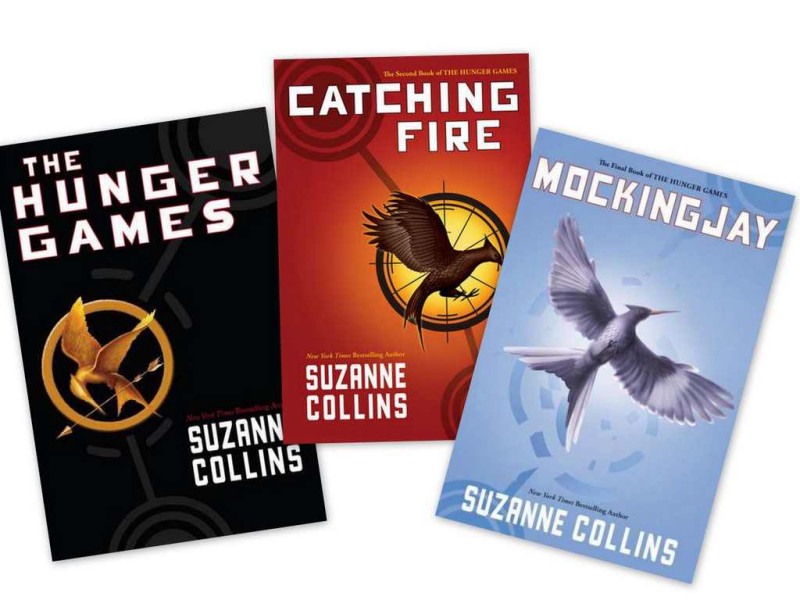

Hunger Games tiền truyện sẽ ra mắt năm 2020
 Ha Quoc Viet
Ha Quoc Viet
Sau 4 phần cực kỳ thành công, người hâm mộ của franchise Hunger Games đã có thể vui mừng, vì phần tiền truyện của phim sẽ được đưa vào sản xuất, sau khi cuốn tiểu thuyết tiếp theo của Suzanne Collins được xuất bản.
Tối 17/6, nhà sản xuất Lionsgate của loạt phim
Hunger Games đã vui mừng thông báo kế hoạch cho phần phim chuyển thể mới, ngay khi tác giả của bộ truyện gốc tiết lộ chuẩn bị trình làng tác phẩm tiếp theo. Cụ thể, cuốn tiểu thuyết sắp tới của Suzanne Collins sẽ là phần tiền truyện của
Hunger Games, lấy bối cảnh 64 năm trước sự kiện xảy ra trong cuốn
The Hunger Games đầu tiên. Chia sẻ với báo giới, ông Joe Drake, chủ tịch Lionsgate đã không giấu được sự thích thú: “Vinh dự là nhà sản xuất của loạt
Hunger Game, chúng tôi không thể đợi cuốn sách tiếp theo của Suzanne được xuất bản. Chúng tôi vẫn luôn giữ liên lạc với bà trong suốt quá trình viết sách và hy vọng rằng sẽ tiếp tục được hợp tác cùng Suzanne trong thời gian sản xuất bộ phim sắp tới.”

Suzanne Collins là tác giả của bộ ba cuốn tiểu thuyết
Hunger Game, bao gồm
The Hunger Games,
Catching Fire và
Mockingjay được Lionsgate chuyển thể thành 4 phim từ 2012-2015 với sự tham gia của Jennifer Lawrence, Liam Hemsworth. Chuỗi phim đã đem về thành công lớn cho nhà sản xuất với gần 3 tỷ USD doanh thu trên toàn cầu. Đặc biệt, tập phim thứ hai,
Catching Fire nhanh chóng thu về hơn 865 triệu USD và trở thành tập thành công nhất của toàn bộ franchise. Phần ngoại truyện của
Hunger Games được kỳ vọng là sẽ tiếp nối thành công trước đó của toàn bộ chuỗi phim.
Sau gần 10 năm, cuốn tiểu thuyết tiếp theo của chuỗi
Hunger Games được dự kiến ra mắt vào tháng 5/2020. Thời gian tác phẩm này được chuyển thể thành phim vẫn chưa được tiết lộ, nhưng nó đã được đưa vào kế hoạch sản xuất của Lionsgate mà thiếu đi sự góp mặt của Jennifer Lawrence.